Seelex 会在同一个应用核心中协调 Plugin、Skill、工具调用和审批。
这份列表是当前进程加载到的那一份插件（多根 first-wins）；与仓库 plugins/ 下的不一定是同一份。每行的「载入根 …」是它实际从哪个根载入的；精选目录里没有登记的那个只报这一句事实，不编来源（不写成"随发行包"）。
切换后，新写入会话使用新的存储；已有历史不会自动迁移。数据库密码不会回显。
深浅（浅色 / 深色）与皮肤是两条独立的轴：深浅决定面、文本、描边的中性基座，皮肤只给主信号与环境渐变（契约见 themes/README.md）。组件结构、交互与可访问性都不随二者改变。
themes/README.md
回滚行数是每个终端标签各留一份的历史缓冲：越大能往上翻得越远，占用也越大（改后立刻作用于已打开的标签）。
到点把提示词投给当前主会话执行（会话切换后自动跳过），提示词与运行结果都留在会话记录里。周期可以指定「每天的几点」开始，也可以让每个周期按创建时刻滚动。